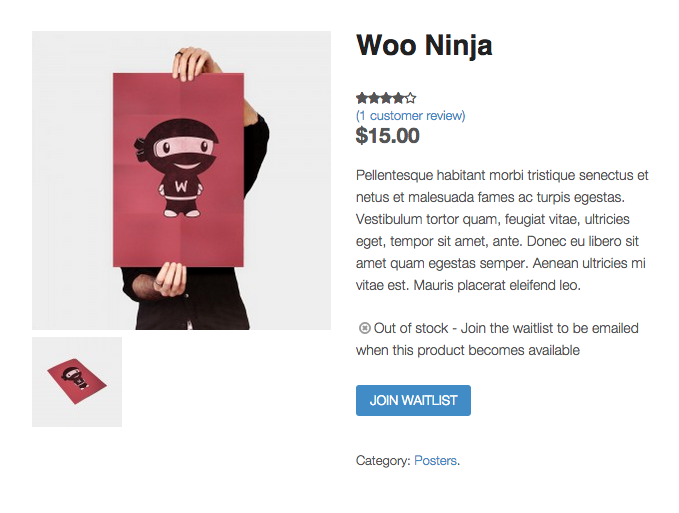
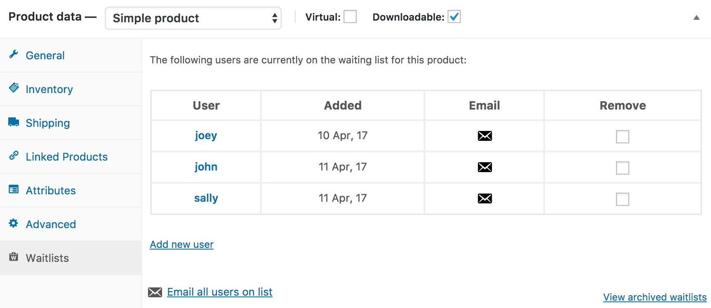
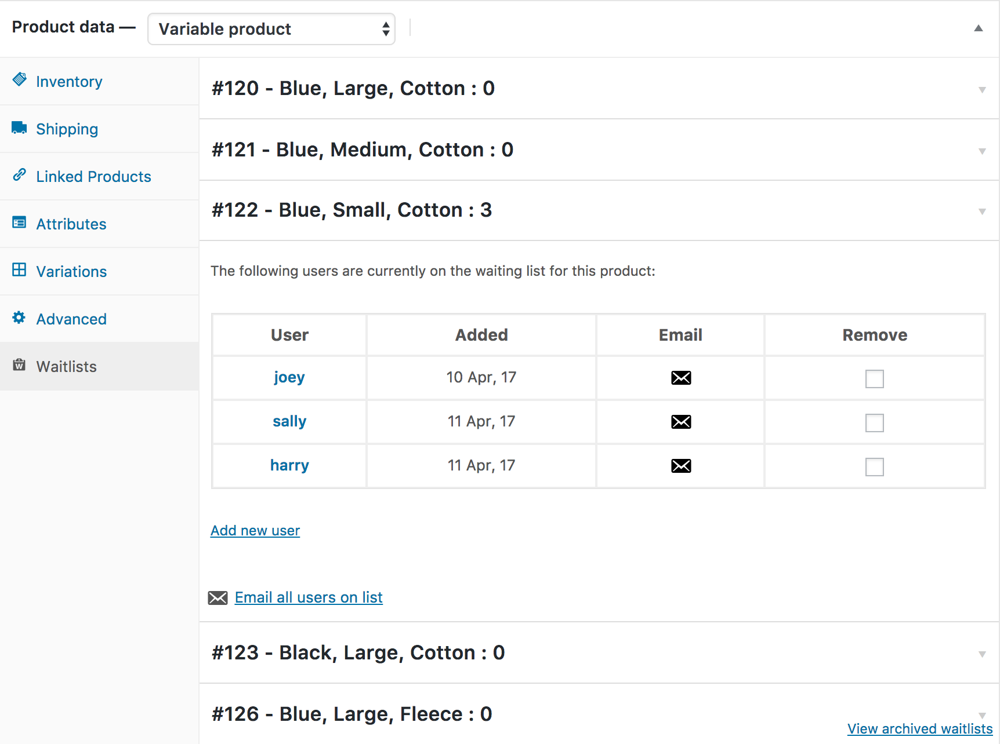
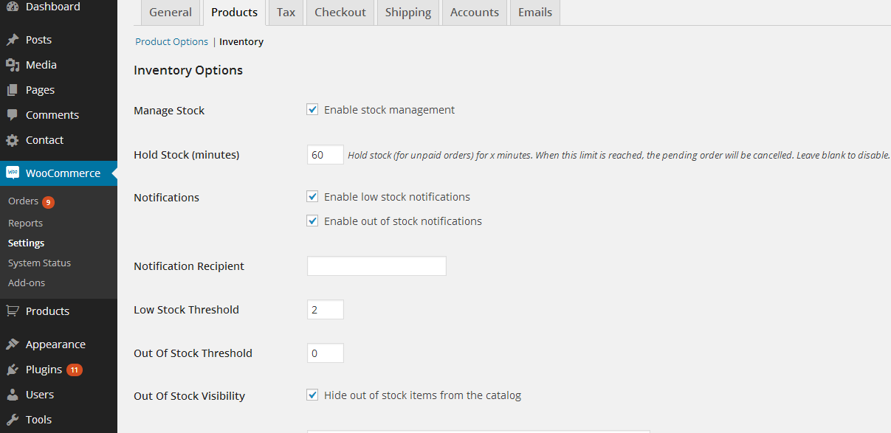
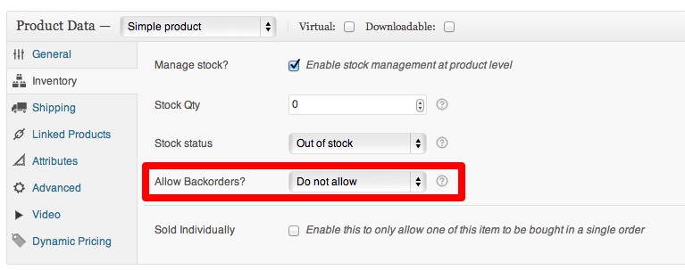

With the WooCommerce Waitlist extension, customers of your site can sign up to be notified by email when an out-of-stock product becomes available. As the site owner you can also review which users are on the waiting list for which products, and sort your products by the number of people registered on the waiting list.
[caption id="attachment_157233" align="aligncenter" width="679"] Out-of-stock product listings with WooCommerce Waitlist enabled[/caption]
Installation
- Unzip and upload the plugin’s folder to your
/wp-content/plugins/ directory
- Activate the extension through the ‘Plugins’ menu in WordPress
More info at: Installing and Managing Plugins.
Shop Manager Functionality
Settings Screen
Unregistered users can join a waitlist without having to log in. Users only need to provide an email address to join a waitlist, and an account and welcome email are automatically created and sent. This option can be toggled on or off using an option within the waitlist settings.
Products Listing Screen
WooCommerce Waitlist adds a new column to the Products listing in the WordPress administration area displaying the number of users on the waiting list for a product. This column is sortable to enable Shop Managers to quickly find the most 'sought after' products in their catalog.

Edit Product Screen
WooCommerce Waitlist adds a new product tab to the Edit Product screen. This new tab displays any users that are currently on the waiting list for the product and a link to any archived waitlists for the product. If the product is out of stock some simple controls for adding, removing and emailing users can be found here.
[caption id="attachment_158575" align="aligncenter" width="550"] An example of the product tab added to the Edit Product page for simple products[/caption]
[caption id="attachment_158576" align="aligncenter" width="550"] An example of the product tab added to the Edit Product page for variable products[/caption]
When editing a waitlist through the Edit Product screen, the product must be updated for changes to take effect.
Automated Emails
When a product is switched from 'Out-of'stock' to 'In-stock', WooCommerce Waitlist sends all users on the waiting list an email informing them that the product is back in stock along with a link to the product listing itself.
Once this email has been sent, WooCommerce Waitlist removes the user from the waiting list for this product the user is archived. If the product is subsequently switched back to 'Out-of-stock', the waiting list will be empty.
The emails follow the same design as all other WooCommerce emails, but the subject and the heading can be altered from within WooCommerce > Settings > Emails > Waitlist Mailout.
[caption id="attachment_158576" align="aligncenter" width="550"] An example of the edit email screen for Waitlist emails[/caption]
An example of the edit email screen for Waitlist emails[/caption]
Waitlist Archiving
When a product comes back into stock and automated emails are turned on, a record of the waitlist is saved.
This record lists all of the users that were sent a back in stock notification, the date that the emails were sent and controls to manually email the users.
The waitlist history for a product can be accessed from the waitlist tab on the product screen by clicking "View archived waitlists".
FAQ
Can a customer view all the products they are on a waiting list for?
There is an experimental shortcode [woocommerce_my_waitlist] which will display a table listing all the products that the currently logged in user is waiting for.
Are customers put on a waitlist in a particular order?
Customers are added to the bottom of the list so the order should be maintained. A date of when the customer joined the waitlist alongside the customer on the waitlist tab.
Does this work for affiliate products?
No. At the moment stock status has no bearing on the output of an affiliate product listing so these have been left well alone.
Does this work for variable products?
There is a known issue when using WooCommerce Waitlist in conjunction with variable products that prevents the 'Join Waitlist' button from being displayed when the "Out of Stock Visibility" option is set to ON.
The only current solution to this problem is to turn this option off:

How do I change the subject / content of emails?
The content of the email and the subject line are both editable via the WooCommerce email system. WooCommerce Waitlist adds a new section to the 'Emails' tab of WooCommerce Settings where this can be managed. For more information please see the WooCommerce Documentation.
What if I don't want users to be automatically emailed when a product is back in stock?
We've got you covered. Add the following snippet to your functions.php file in your theme and no email will be sent out and users will remain on the waitlist.
add_filter( 'wcwl_automatic_mailouts_are_disabled', '__return_true' );
What if I want to email users automatically, but don't want them to be removed from the waitlist?
We've got that one too. Add the following snippet to your functions.php file in your theme and users will remain on the waitlist until they purchase that product.
add_filter( 'wcwl_persistent_waitlists_are_disabled', '__return_false' );
Why does the Waitlist only show up for some products?
If you're using the Advanced Notifications extension make sure you disable the backorder setting.

Extending & Customization
WooCommerce Waitlist comes stuffed with action and filter hooks for your customisation needs. For more information on using hooks in WordPress see here
Action Hooks
wcwl_before_add_user_to_waitlist - passes the WC_Product and WP_User objects as parameterswcwl_after_add_user_to_waitlist - passes the WC_Product and WP_User objects as parameterswcwl_before_remove_user_from_waitlist - passes the WC_Product and WP_User objects as parameterswcwl_after_remove_user_from_waitlist - passes the WC_Product and WP_User objects as parameterswcwl_mailout_send_email - passes the User ID and WC_Product ID as parameters
Filter Hooks
Options
wcwl_persistent_waitlists_are_disabledwcwl_display_empty_waitlists_on_in_stock_productswcwl_automatic_mailouts_are_disabled
Admin
wcwl_empty_waitlist_introductionwcwl_waitlist_introductionwcwl_waitlist_variation_instock_introduction
Shortcode
wcwl_shortcode_thumbnailwcwl_shortcode_product_title
Frontend
wcwl_update_waitlist_success_message_textwcwl_toggle_waitlist_ambiguous_error_message_textwcwl_leave_waitlist_success_message_textwcwl_join_waitlist_success_message_textwcwl_join_waitlist_message_textwcwl_leave_waitlist_message_textwcwl_grouped_product_message_classeswcwl_grouped_product_message_textwcwl_grouped_product_message_htmlwcwl_join_waitlist_button_classeswcwl_leave_waitlist_button_classeswcwl_update_waitlist_button_classeswcwl_dummy_waitlist_button_classeswcwl_join_waitlist_submit_button_htmlwcwl_leave_waitlist_submit_button_htmlwcwl_dummy_waitlist_submit_button_htmlwcwl_grouped_waitlist_submit_button_htmlwcwl_join_waitlist_submit_button_textwcwl_leave_waitlist_submit_button_textwcwl_dummy_waitlist_submit_button_textwcwl_grouped_waitlist_submit_button_textwcwl_toggle_waitlist_urlwcwl_join_waitlist_user_requires_registration_message_textwcwl_join_waitlist_invalid_email_message_textwcwl_toggle_waitlist_no_product_message_textwcwl_grouped_product_joined_message_textwcwl_grouped_single_product_joined_message_textwcwl_leave_waitlist_message_textwcwl_join_waitlist_success_message_textwcwl_grouped_product_style_block_csswcwl_grouped_product_style_block
Email
wcwl_email_salutationwcwl_email_product_back_in_stock_textwcwl_email_mailout_disclaimer_textwcwl_email_visit_this_link_to_purchase_textwcwl_email_mailout_signoffwcwl_mailout_html